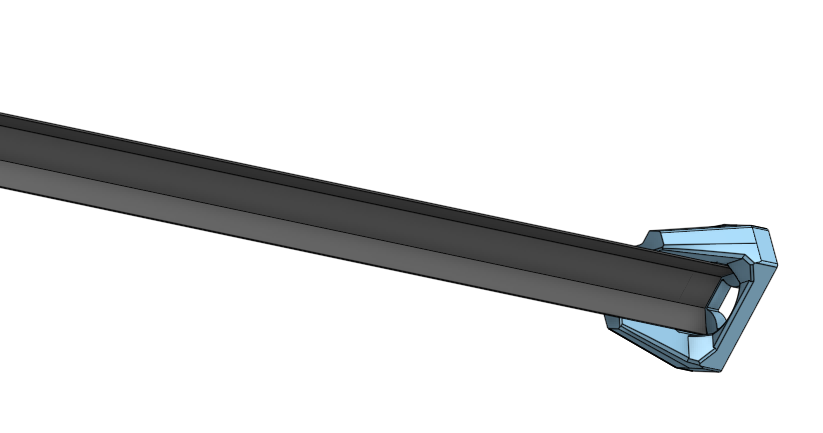

Project
Desktop Diffuse Light
A desktop light to help with building small projects and playing TCG games with an overhead camera.
This project was actually the catalyst for the custom 3D printer. I was playing MTG Commander on Spelltable with some of my friends, and I was constantly getting horrendous reflections off the card,s making it extremely difficult for everybody else to play. So I thought of a square with one edge missing, and each side is a strip of LEDs, aiming across the cards and avoiding the reflections.
Build Progress

LED Channel and Mount
Each edge of the light is made up of off the shelf LED channel cut to whatever length I need it to be the I desined an end cap that fits onto the end of the channel. The cap contains two magnets and a 4 pin pogo pin connector making each section self contained and easy to remove.

Corner Towers
Each corner has a tower with two connectors with two more magnets that connect to the magnets on the LED channels with a corrsponding pogo pin connector for easy useage and customiziation.

MTG Commander Deck Box
Along with the diffuse light I also designed a deck box for to fit into a Gamegenic Cards' Lair Pro 1000+. I wanted to fit 4 decks into the shorter section but Gamegenic does not make any deck boxes that fit that criteria so I took matters into my own hands.

MTG Commander Deck Box
It has a display in the front for your commander and room within for 99 double sleeved cards. On top of that it fits into the 75mmx90mmx105mm footprint required to put four of them in the cards lair.
Links and Stuff
Here is the link to the Onshape for this project: Diffuse Light and EDH Box
Gamegenic Cards Lair: CARDS’ LAIR PRO 1000+ CONVERTIBLE